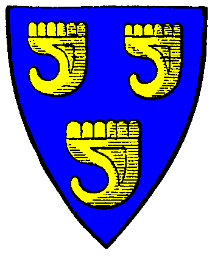

| Übersicht,
Alltägliches und Lokales (RPG) |
|
Machs gut Galexus
|
Tengri Lethos von Alirion
 |
Du bist nun von uns gegangen, nachdem Du Dich lange Zeit in Deinen Wachturm zurückgezogen hattest und mit niemandem mehr sprechen wolltest. Ich weiß leider nicht weshalb Du so mit Deinem Leben gehadert hast. Du warst mir ein guter Freund und bist der vorletzte aus der damaligen Hafenbande. Wo auch immer Du nun bist, ich hoffe es geht Dir dort besser.
Ich werde Dich nicht vergessen, Freund!
Baron Tengri Lethos,
Vorsteher von Tengrosia
Zur 3. Stunde am 38.Erntemond im Jahre 430 |
22.09.07 21:50
 |
|
Sambi
 |
Lebe Frei, Sirb Stolz
Sambi,
Kardinal im Dienste des einzig wahren Glaubens an Pheron,
Legionär Pherons
Zur 9. Stunde am 38.Erntemond im Jahre 430 |
22.09.07 23:15
|
|
| Elijah (RIP) |
Wer ehrlich hat gelebt
und selig ist gestorben,
hat einen Himmel hier
und einen dort erworben.
*ein Pfotenabdruck*
Sir Elijah,
Vorsteher von Tortuga,
Priester im Dienste des einzig wahren Glaubens an Tura
Zur 13. Stunde am 38.Erntemond im Jahre 430 |
23.09.07 0:04
|
|
| Antaras (RIP) |
*kniet nieder*
Ich danke dir für alles.
Baron Antaras,
Vorsteher von Rosaleda
Zur 3. Stunde am 42.Erntemond im Jahre 430 |
23.09.07 20:15
|
|
| Natrixa (RIP) |
*kniet neben Antaras nieder und betet leise. Geht dann wortlos von dannen*
Freifrau Natrixa,
Vorsteherin von Dol Guldur,
Ehefrau des ehrenwerten Wasil
Zur 7. Stunde am 59.Erntemond im Jahre 430 |
27.09.07 20:13
|
|
| Dersåx (RIP) |
*legt zwei Drachenschwanzspitzen auf den höchsten Berg auf Sanryati*
Danke Gal
Siel
Zur 17. Stunde am 59.Erntemond im Jahre 430 |
27.09.07 22:40
|
|
| Galahad (RIP) |
Redseelig war er nun wirklich nicht, aber ein verlässliches Mitglied unserer Gemeinschaft.
Galahad
Zur 15. Stunde am 88.Erntemond im Jahre 430 |
04.10.07 16:38
|
|
Übersicht,
Alltägliches und Lokales (RPG)
|